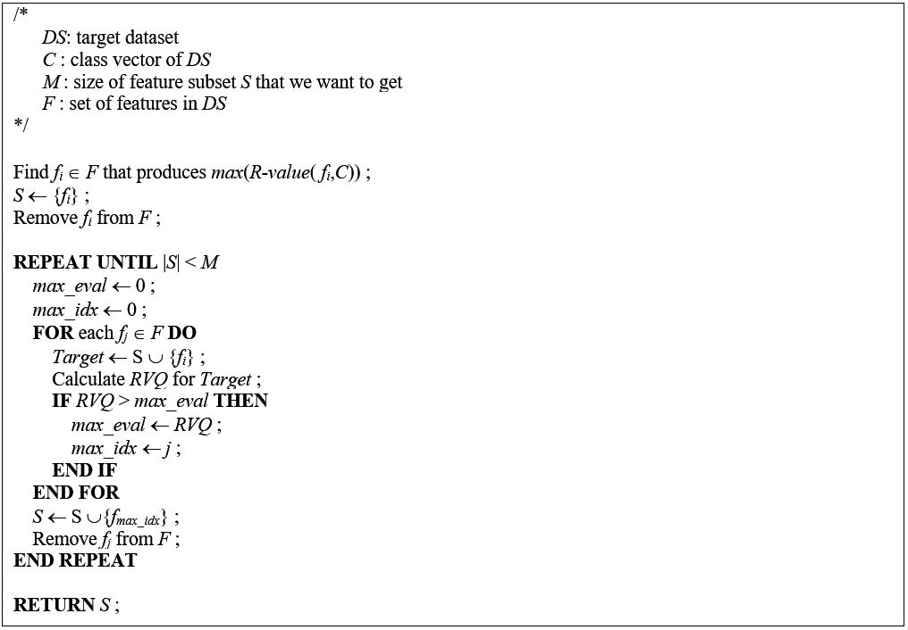

|
1. Introduction
Feature selection is one of the data preprocessing techniques that can improve the speed of computing as well as remove the noise of data when the number of features of the dataset to be analyzed is several hundred thousand or more. Feature selection is also aimed at enhancing the classification accuracy built through machine learning. Minimum Redundancy - Maximum Relevance (mRMR) is one of well-known feature selection algorithms that selects features by calculating redundancy and relevance between features and class vector. mRMR uses mutual information as a measure of redundancy and relevance. In this study, we proposed a method to improve the performance of mRMR feature selection by using Pearson’s correlation coefficient as a redundancy measure and using R-value as a relevance measure. We selected features by original mRMR and proposed method from various datasets, and performed classification test. From the results, we confirmed that the proposed method showed significant improvement in classification accuracy in many cases.

Figure1. Pseudo Code of AmRMR
2. Source Code
4. Citation Request:
Sejong Oh, Improved Measures of Redundancy and Relevance for mRMR Feature Selection.
|